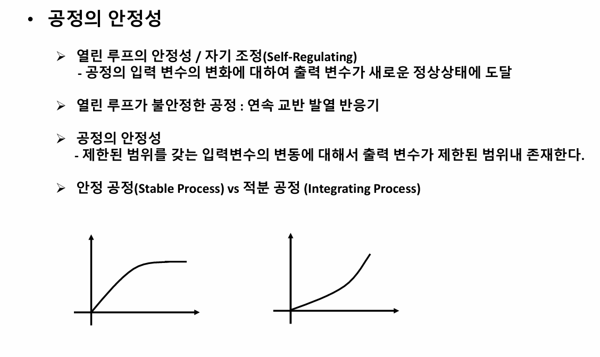
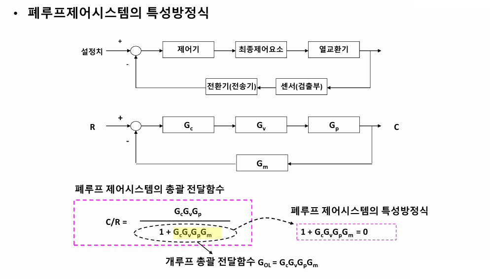
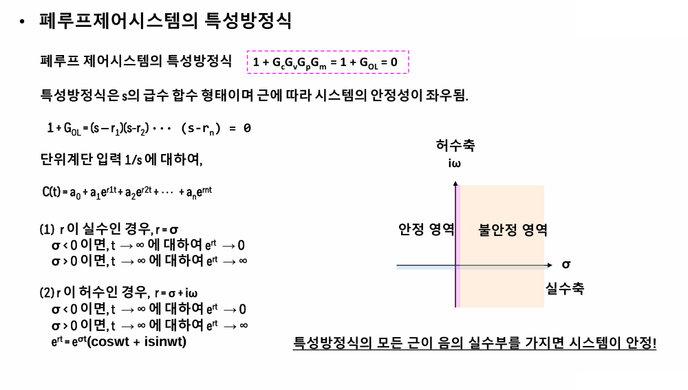
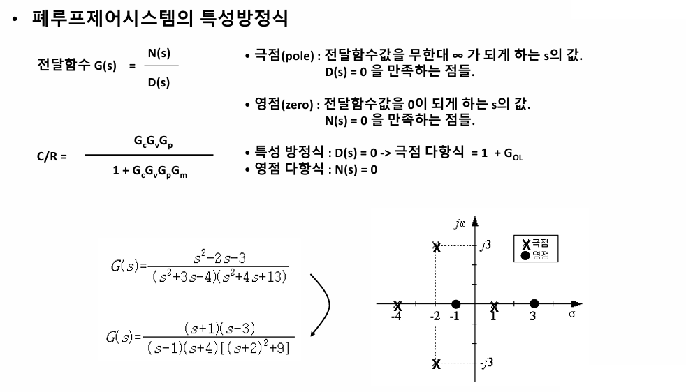
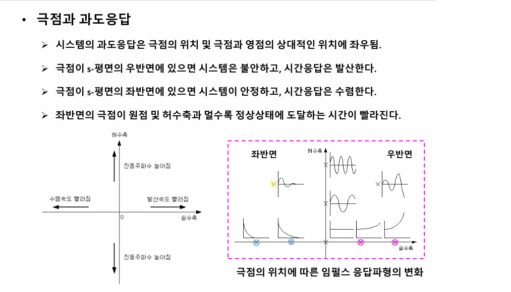
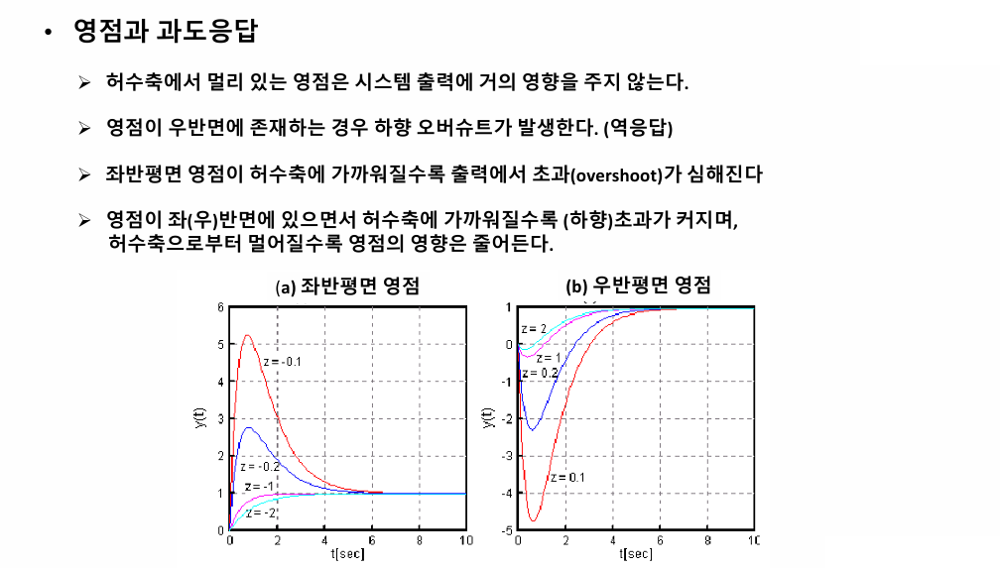
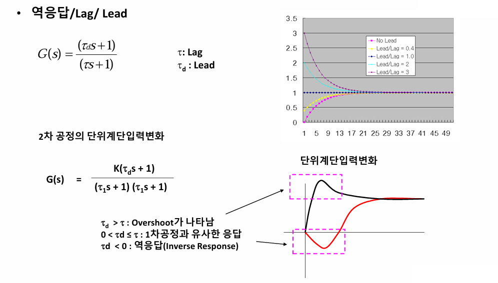
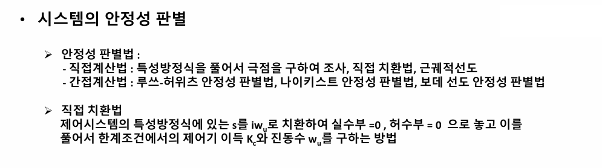

안정성
제어기가 없는 열린루프에서 입력변수가 변화했을 때, 출력변수가 제한된 범위 내에서 정상상태에 도달할 수 있으면 안정하다고 하다. 이를 자기 조정이 가능한 공정이라고 한다.

공정이 안정하다는 것은 입력변수가 변동할 때 출력 변수가 제한된 범위 내에 존재하는 것을 의미한다. 밑의 그림에서 왼쪽은 안정한 공정이고, 오른쪽은 출력변수가 계속 변하므로 불안정한 것이다.`
우리의 관점은 폐루프 제어 시스템을 만들었을 때, 이것이 잘 작동할 것인가이다.

전체 총괄전달함수를 구한 다음, 거기서 분모가 0이 되는 식을 폐루프 제어시스템의 특성방정식이라고 한다. 이게 어디가 중요할까?

특성방정식을 풀어서 근을 뽑아내면, r1 r2 r3 r4 등등등이 나오게 된다. 이때 그 각각의 근은 허수일 수도 있고 실수일 수도 있다. 이때 그 모든 근의 실수부가 음의 값을 가지면 시스템이 안정하다고 본다.

어떠한 전달함수든 그 분모를 0되게 만드는 s값을 극점이라고 하고, 분자가 0이 되게 하는 s값을 영점이라고 한다.

응답은 극점의 위치에 따라 달라지는데, 극점이 우반면에 있으면 불안정하고, 좌반면에 있으면 안정하다. 이때 안정한 정도는 극점이 원점과 허수축에 얼마나 멀리있는가에 따라 달라지는데, 원점과 허수축에 멀수록 더 안정하고 정상상태에 빠르게 수렴한다.

영점이 허수축에서 멀리 있으면 시스템에 딱히 영향을 주지 않는다. 그러나 영점이 우반면에 있을 경우 하향 오버슈트(역응답)이 발생하고, 좌반면에 있을 경우에는 영점이 허수축에 가까우면 오버슈트가 심해진다. 영점이 허수축에 가까워질수록 초과나 역응답이 심해지며 멀어질 수록 영점의 영향은 줄어든다.
얘는 그냥 허수축에 가깝냐에 따라 오버슈트 방향과 세기만 결정하지 안정성에는 크게 영향을 주지 않는다.

전달함수에서 밑에 있는 시간상수는 lag(대충 다리라고 외우자)라고 부르고 위는 lead라고 부른다. 이때
lead>lag면 오버슈트가 나타나고, 0<lead<=lag 면 1차 공정과 유사한 응답이 나타나고, lead가 음수면 역응답이다.
대충 lead를 머리, lag를 다리라고 생각하면 외우기 편하다. 머리가 크면 오버슈트, 머리가 작으면 1차공정, 머리가 거꾸로되면(음의 값) 역오버슈트

시스템의 안정성 판별법에 대해 알아보자.
직접계산법:직접 특성방정식을 풀어서 극점을 구하여 조사하는 방법이 있다. 직접 치환법과 근궤적 선도가 이에 해당한다.
간접계산법:루쓰-허위츠 판별법, 나이키스트 판별법, 보데선도 판별법
**직접 치환법: 제어시스템의 특성방정식에 있는 s를 iw로 치환하여 실수부=0, 허수부=0으로 놓고 이를 풀어서 한계조건에서의 제어기 이득 KC와 진동수 w를 구하는 방법